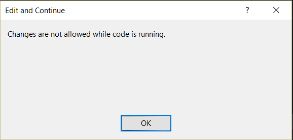

ASP.NET Core 1.0
formerly known as
ASP.NET 5
ASP.NET vNext
The hero we deserve
But it's going to rattle some cages
See HTMLCheats.com
Stack Evolution
ASP.NET 4.5

ASP.NET Core

ASP.NET Core
Technologies

Roadmap
Currently RC1
Frontend
New Integrations
ASP.NET Core projects rely on:
- Node.js
- npm
- Gulp (or Grunt)
- bower
New Features
- Tag Helpers
- Task Runner
- JSON based config
- Build-in Dependency Injection
Tag Helpers
@Html.ActionLink("Add a Movie", "Add", "Movie")
now becomes
<a asp-action="Add" asp-controller="Movie">Add a Movie</a>
Forms look like html forms again, but now with intellisense!
Environment Tag Helper
<environment names="Development">
...
</environment>
<environment names="Staging,Production">
...
</environment>
Code block rendered based on the ASPNET_ENV environment variable
Let's make something!
Let's make this slide deck
Step 1: Frame it up
- Create the project
- Pull in Packages we need
- Clear out the ones we don't
- Build/Run locally
Ever seen this?
Welcome to the future!
Well...mostly (you can't debug)
Step 2: Build Runner
Using Gulp, we can
- Watch and Build SASS/LESS Files
- Watch and Build TypeScript Files
- Concat/Minify CSS
- Concat/Minify JS
-
Do pretty much anything we want on:
- Project Open
- Before Build
- After Build
- Clean
Gulpfile.js
///
Backend
New Features
- New Config Mgmt
- Built-in DI
- Faster Response Times
- Drastically Faster
- Open Source (yay!)
Config
web.config and transforms replaced by appsettings.json
{
"Data": {
"DefaultConnection": {
"ConnectionString": "Server=(localdb)\\mssqllocaldb;Database=aspnet5-db;Trusted_Connection=True;"
}
},
"ApplicationInsights": {
"InstrumentationKey": "edde8e81-f25e-4790-9ca4-820b148b9f3d"
},
"Logging": {
"IncludeScopes": false,
"LogLevel": {
"Default": "Verbose",
"System": "Information",
"Microsoft": "Information"
}
}
}Config Management
Startup.cs defines how config is processed
public Startup(IHostingEnvironment env)
{
// Set up configuration sources.
var builder = new ConfigurationBuilder()
.AddJsonFile("appsettings.json")
.AddEnvironmentVariables(); //Environment Variables override settings in appsettings.json
if (env.IsDevelopment())
{
// This will push telemetry data through Application Insights pipeline faster, allowing you to view results immediately.
builder.AddApplicationInsightsSettings(developerMode: true);
}
Configuration = builder.Build();
}
Environment variable overrides make Cloud Config much easier
Dependency Injection
New built-in abstraction and default provider
- Transient
- Created each time they are requested.
- Scoped
- Created once per request. Good for a DbContext.
- Singleton
- Created the first time they are requested, every subsequent request uses the same instance.
- Instance
- Add an instance directly to the services container. This instance will be used for all subsequent requests (this will create a Singleton-scoped instance).
Dependency Injection
Configured from Startup.cs ConfigureServices() method
public void ConfigureServices(IServiceCollection services)
{
services.AddScoped<IUserService, UserService>();
//services.AddTransient<IUserService, UserService>();
//services.AddSingleton<IUserService, UserService>();
//services.AddInstance(new UserService());
}
Can then be used elsewhere in the app
private readonly IUserService _userService;
public HomeController(IUserService userService)
{
_userService = userService;
}
You can swap out the DI provider for Unity, Autofac, etc and keep the same syntax.